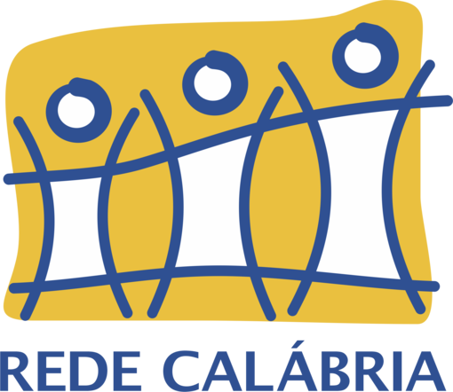
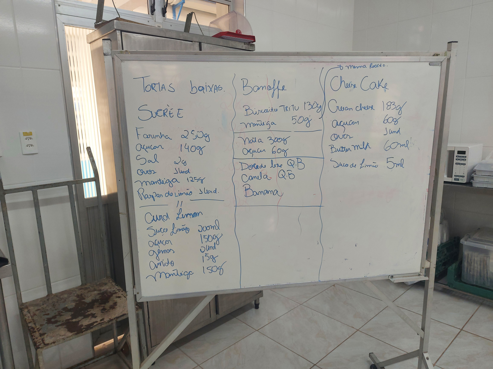

A Rede Calábria realiza atividades socioassistenciais e educacionais, sendo um importante elo de ligação, diálogo, aprendizado, colaboração e comunhão institucional entre as atividades, os profissionais e a sociedade, são 21 unidades atuando em 13 bairros de Porto Alegre, inpactando a vida de mais de 30 mil pessoal anualmente, entre elas, crianças, jovens, adultos e idosos.

Modo de ensino Calábriano
Baseados nos princípios da filosofia e espiritualidade de São João Calábria, acreditamos em um mundo como família de Deus, acolhendo a todos com dignidade, sem distinção de raça, cor, religião, condição social, enfim, olhamos a todos como iguais, especialmente aqueles que mais precisam, assim como pedia o fundador. Nesta instituição, nossa prática educativa se dá através do respeito, diálogo, fraternidade e solidariedade, buscando construir um espaço de convivência saudável e humanizador, capaz de transformar e promover a vida de todos os que nele estiverem: educandos, educadores, colaboradores, família e comunidade.
Acolhendo e Promovendo vidas
Desde sua fundação até os dias atuais, a Rede Calábria passou por inumeras reformas e mudanças: manteve, ampliou e melhorou sua estrutura, inovou quando aceitou os desafios dos novos tempos, especialmente na proteção e no acolhimento de crianças, adolescentes e idosos, mas sempre mantendo sua causa estratégica: Acolher, promovendo vidas
Nossas ações
➤ Abordagem social ação de rua
➤ Acolhimento institucional cas-lares crianças e idosos
➤ Centro dia do idoso
➤ Educação infantil
➤ Educação integral
➤ Paif e Paefi
➤ Programa de proteção a crianças e adolescentes ameaçados de morte
➤ Projeto poprua
➤ Serviço de atendimentos ás familias
➤ Serviço de convivência e fortalecimentos de vínculos
➤ Republica para idosos
➤ Qualificação profissisional
Os principios de nossas ações

-

O Centro de Educacional São João Calábria conta com profissionais capacitados e estrutura adequada para oferecer Cursos de Qualificação Profissional. Estes criam oportunidade de formação profissional para jovens, através de aulas teóricas e aulas práticas que potencializam a absorção de conhecimento por parte dos alunos. Todos são capacitados tanto para o corresponder as exigências do mercado de trabalho, quanto para o empreendedorismo. Clique aqui para visualizar os cursos disponíveis em nossa instituição.
-

clicando aqui, você poderá aprender mais exclusivamente sobre o curso profissionalizante de gastronomia e sua importancia, ficará sabendo sobre a duração do curso e sua carga horaria, teor do curso, método de ensino, espaço dedicado e sobre a importancia da gastronomia no atual mercado de trabalho, além de oportunidades profissionais para uma pessoa com qualificação na aréa da gastronomia e quais são as principais ambiçoes dos alunos dos cursos de gastronomia.